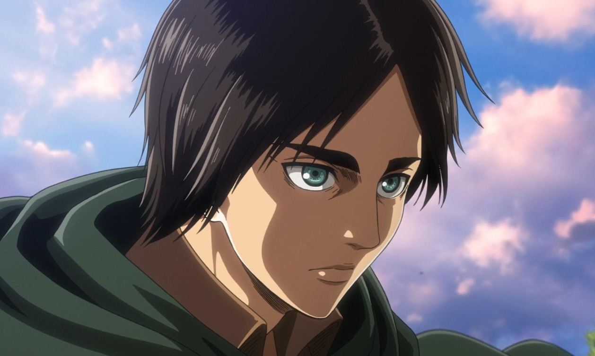

My Favorite Character
Eren Jaeger
 Who
Eren Jaeger is a central character in the manga and anime series "Attack on Titan", created by Hajime Isayama. His story is complex and deeply intertwined with the broader narrative of the series.
Character Traits
Eren was best described as hardheaded, strong-willed, passionate, and impulsive, which are attributes of both his strong determination to protect mankind and, eventually, his equally strong determination to escape the Walls. Eren embodies a relentless drive and passion which ends up pushing the narrative of the story further.
Early Life
- He was born and raised in the Shiganshina District of Wall Maria. Eren’s childhood was marked by his strong desire to explore the world beyond the walls, inspired by his father’s stories and his own curiosity.
- At the age of 10, Eren witnessed the catastrophic breach of Wall Maria by the Titans, which led to the tragic death of his mother. This event fueled his intense hatred for the Titans and his determination to eradicate them. Two years later, at the age of 12, Eren enlisted in the Cadet Corps alongside his friends Mikasa and Armin.
- The Trost arc begins shortly after their graduation when the Colossal Titan breaches Wall Rose at Trost District. Eren and his fellow cadets are thrust into battle. During the chaos, Eren saves Armin from being eaten by a Titan but is swallowed himself. Miraculously, Eren re-emerges from the nape of a mysterious Titan that fights other Titans, revealing his ability to transform into a Titan.
Eren Jaeger doing random things


For more information on Eren and his character,
The Unyieldng Will: A Character Study of Eren Yeager.
Information on the entire series,
Attack on Titan Wiki
Created by : Liam Kerr